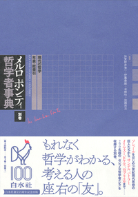

New Books
数学基礎論序説
田中一之 著
スマリヤン数理論理学講義 下巻
レイモンド・Ｍ・スマリヤン 著 田中一之 監訳 川辺治之 訳
逆数学
ジョン・スティルウェル著 田中一之 監訳 川辺治之 訳
Books: 2012-2015
Books
スマリヤン数理論理学講義 上巻
レイモンド・Ｍ・スマリヤン 著 田中一之 監訳 川辺治之 訳
ゲーデルに挑む証明不能なことの証明
田中 一之 (著)
ゲーデルの定理 利用と誤用不完全ガイド
トルケル・フランセーン (著), 田中 一之 (翻訳)
確かさを求めて―数学の基礎についての哲学論考
M. ジャキント著, 田中 一之 (翻訳)
数の体系と超準モデル
田中 一之 編
数学のロジックと集合論
田中 一之, 鈴木 登志雄 著

メルロ=ポンティ哲学者事典 別巻
執筆項目「ゲーデル」(pp.147-149)
ゲーデルと２０世紀の論理学１
田中 一之 編
ゲーデルと２０世紀の論理学2
田中 一之 編

ゲーデルと２０世紀の論理学 3
田中 一之 編
ゲーデルと２０世紀の論理学 4
田中 一之 編
ゲーデルと２０世紀の論理学 4
田中 一之 編